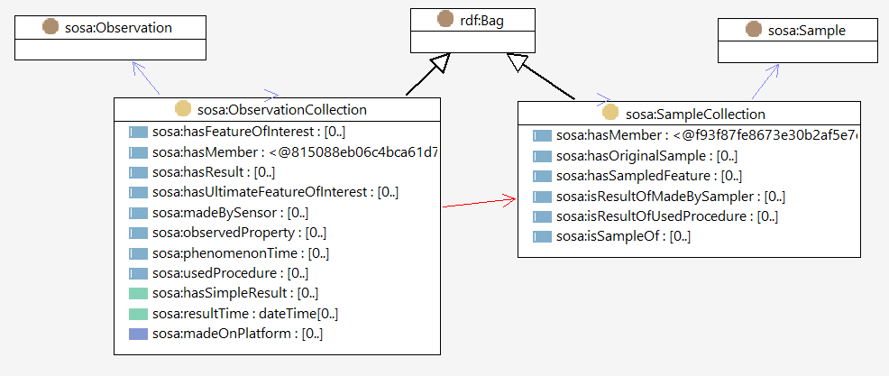
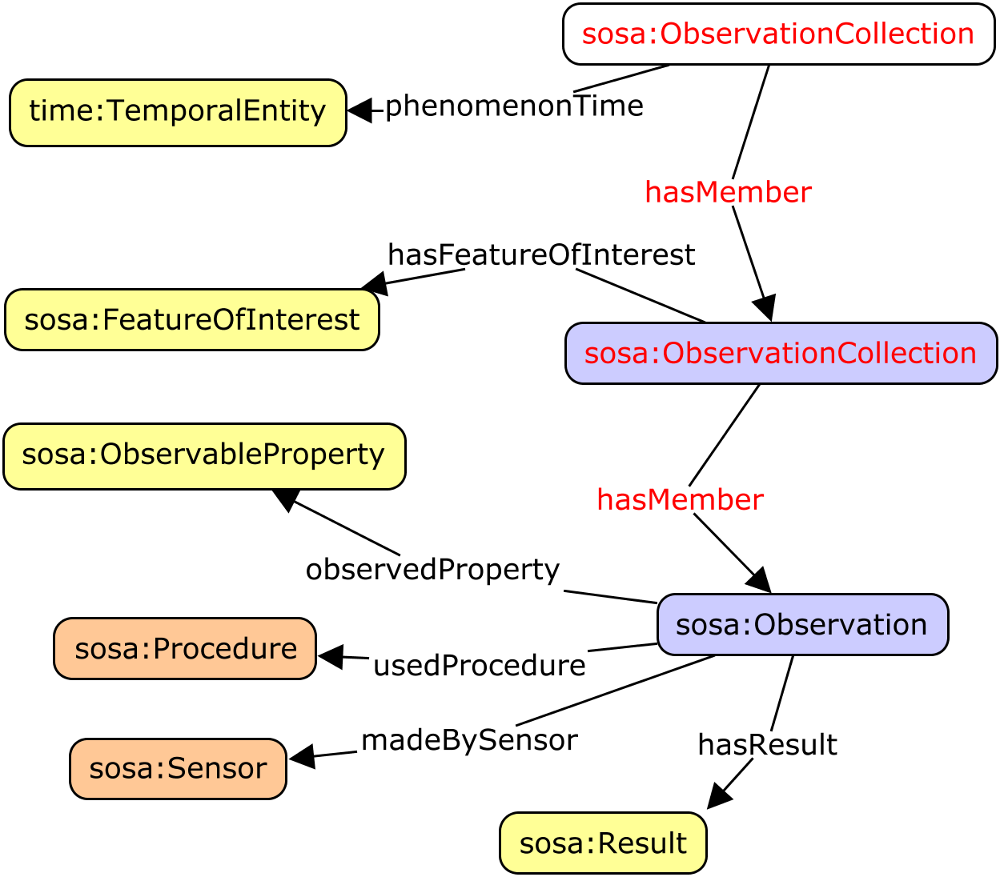
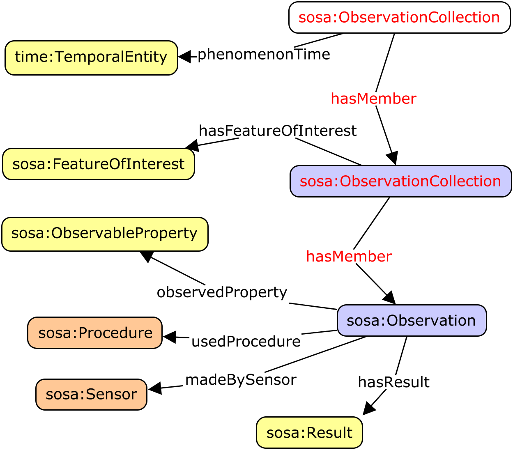
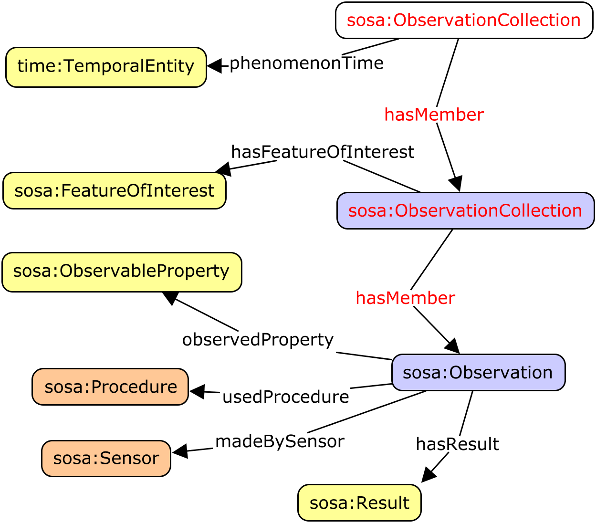

The Semantic Sensor Network (SSN) ontology is an ontology for describing
sensors and their observations, the involved procedures, the studied features of
interest, the samples used to do so, and the observed properties, as well as actuators.
SSN follows a horizontal and vertical modularization architecture, with the core classes
and properties defined using minimal axiomatization in a graph called SOSA (Sensor, Observation, Sample, and
Actuator)
supplemented with additional axiomatization and terms in further graphs.
These allow SSN to support a wide range of applications and use
cases, including satellite imagery, large-scale scientific monitoring, industrial and
household infrastructures, social sensing, citizen science, observation-driven ontology
engineering, and the Web of Things.
The namespace for the core terms is
http://www.w3.org/ns/sosa/.
The suggested prefix for the SOSA namespace is sosa.
For OGC this is a Public Draft of a document prepared
by the Spatial Data on the Web Working Group (SDWWG)
— a joint W3C-OGC project (see charter).
The document is prepared following W3C conventions. The document is
released at this time to solicit public comment.
Introduction
Sensors are a major source of data available on the Web
today. While sensor data may be published as mere values, searching, reusing, integrating, and interpreting these
data requires more than just the observation results. Of equal
importance for the proper interpretation of these values is information
about the studied feature of interest, such as a river, the observed
property, such as flow velocity, the utilized sampling strategy, such as
the specific locations and times at which the velocity was measured, and
a variety of other information. OGC's Sensor Web Enablement standards
[[OandM]], [[SensorML]] provide a means to annotate sensors and their
observations. However, these standards are not integrated and
aligned with W3C Semantic Web technologies and Linked Data in
particular, which are key drivers for creating and maintaining a global
and densely interconnected graph of data. With the rise of the Web of
Things and smart cities and homes more generally, actuators and the data
they produce also become first-class citizens of the Web. Given their
close relation to sensors, observations, procedures, and features of
interest, it is desirable to provide a common ontology that also
includes actuators and actuation. Finally, with the increasing diversity
of data and data providers, definitions such as those for sensors need
to be broadened, e.g., to include social sensing. The following
specifications introduce the new Semantic Sensor Network (SSN) and
Sensor, Observation, Sample, and Actuator (SOSA) ontologies that are set
out to provide flexible but coherent perspectives for representing the
entities, relations, and activities involved in sensing, sampling, and
actuation. SOSA provides a lightweight core for SSN and aims at broadening
the target audience and application areas that can make use of Semantic Web ontologies.
At the same time, SOSA acts as minimal interoperability fall-back level, i.e.,
it defines those common classes and properties for which data can be safely
exchanged across all uses of SSN, its modules, and SOSA.
Modularization
Ontology modularization is commonly used
to segment an ontology to provide users with the knowledge
they require, reducing the scope as much as possible to what is strictly
necessary in a given use case.
The SSN Ontology is distributed through several modules or graphs that use owl:imports
statements.
We distinguish two methods depending on the
directionality of the segmentation: a vertical segmentation and a
horizontal segmentation.
The SOSA and SSN ontologies and their vertical and horizontal modules.
TODO: re-draw to include SOSA-OMS, SSN-OMS
Vertical Segmentation
Vertical modules build upon each other, i.e., they directionally owl:import
lower level modules. Lower level modules are independent of their higher
level modules and logically consistent on their own.
In particular,
the SOSA graph declares all the core classes and properties, and provides textual definitions and other
annotations.
Some semantic enrichment is provided using Schema.org properties, but there is no formal axiomatization.
SOSA may be used as-is by an audience who wish to use terminology consistent with the SSN
Ontology, thus ensuring interoperability with SSN-based repositories
the SSN graph imports SOSA, and adds axioms that formally indicate how properties relate to
classes, how classes relate to each other. SSN may be used in semantic web systems that use
inferencing and reasoning, and consistency checking for datasets
the SOSA-OMS graph imports SOSA and describes the alignment of SOSA to [[OMS]], adding some
additional terms used in OMS that are not otherwise included in SSN. SOSA-OMS may be used by audiences
for whom strict conformance to [[OMS]] (also known as ISO 19156:2023) is a requirement
the SSN-OMS graph imports SOSA-OMS and SSN and describes the alignment of SSN to [[OMS]]
including OWL/RDFS axiomatization. SSN-OMS may be used by audiences for whom strict conformance to
[[OMS]] (also known as ISO 19156:2023) is a requirement, with reasoning support
the Dolce-UltraLite Alignment graph imports the SSN graph which itself imports the SOSA
graph, and adds axioms that position SSN within Dolce-UltraLite. DUL-Alignment may be
used to integrate data designed using SSN into systems otherwise built in the Dolce-UltraLite
framework
SOSA as the core, does not
import any other ontologies, so it is truly independent of
vertical modules that add more expressivity and further ontological
commitments to the lightweight semantics of SOSA.
Readers who do not wish to view the SSN axioms may hide them by selecting the button [Show only core
SOSA terms] at the top of the Overview of Classes and Properties
or [Hide additional SSN axioms] on each individual specification block.
Note that higher level here is not to be confused with upper level
ontologies. Upper level ontologies are general knowledge ontologies that
can be directionally imported in many domains, whereas our definition of
higher level ontologies here refers to an ontology that extends one or
several ontology modules to capture a larger part of a knowledge domain
and/or combine knowledge domains.
Horizontal Segmentation
Modules that are horizontally layered may depend on each other, i.e.,
they may rely on the directional import of another horizontal module.
Two horizontal modules that are dependent on the SOSA and SSN ontologies are
presented in this specification,
the Sample Relations Module
the SSN System module
Other ontologies that add domain-specific terms to SOSA and SSN, but require the
import of SOSA or SSN, can be considered horizontal modules.
Origins of SSN and SOSA
Here we briefly review the origins of SSN and SOSA, namely the initial
SSN version published by the W3C Semantic Sensor Network Incubator
Group [[SSNX]] and work on Sensor Web Enablement by the OGC. We
also highlight the most substantial changes made since the initial
release of the SSN ontology.
Starting in 2002, the OGC's Sensor Web Enablement initiative has developed
a generic framework for delivering sensor data, dealing with
remote-sensing, moving platforms, and in-situ monitoring and sensing.
The Sensor Observation Service defines a standard query interface for
sensor and observation data, following the pattern established by OGC
for their Web Services. The returned XML data conforms with the Sensor Model
Language [[SensorML]] and OMXML [[OMXML]], whereby the latter implements
Observations and Measurements [[OandM]].
SensorML and O&M are complementary viewpoints. SensorML
is 'provider-centric' and encodes details of the sensor along with raw
observation data. SensorML is self-contained and highly flexible. This
makes life easy for data producers but is demanding on consumers.
SensorML provides extensive support for serialization of numeric data arrays
and is particularly optimized for data that includes multiple parallel
streams that must be processed together. For example, the data collected
by cameras on airborne vehicles must be geo-referenced based on the
instantaneous position of the platform and orientation of the camera. In
contrast, O&M was designed to be more 'user-centric' with the target
of the observation and the observed property as first-class objects.
O&M works at a higher semantic level than SensorML, but only
provides abstract classes for sensors, features of interest and
observable properties, expecting the details to be provided by specific
applications and domains. O&M also provided a model for sampling,
since almost all scientific observations are made on a subset of, or
proxy for, the ultimate feature of interest.
The initial W3C Semantic Sensor Network Incubator Groupontology
(SSNX) was built around an ontology design pattern called the Stimulus
Sensor Observation (SSO) pattern [[SSO-Pattern]]. The SSO was
developed as a minimal and common ground for heavy-weight ontologies
for the use on the Semantic Sensor Web as well as to explicitly
address the need for light-weight semantics requested by the Linked
Data community. The SSO was also aligned to the Dolce-Ultralite upper
ontology (DUL).
The SSN ontology described in this document is based on a revised and
expanded version of this pattern, namely the Sensor, Observation,
Sample, and Actuator (SOSA) ontology.
Similar to SSNX, SOSA acts as a central building block for the SSN but puts more
emphasis on light-weight use and the ability to be used standalone.
The axiomatization also changed to provide an experience more related
to Schema.org. Notable differences include the usage of the Schema.org
domainIncludes and rangeIncludes annotation
properties that provide an informal semantics compared to the
inferential semantics of their OWL 2 counterparts. In line with the
changes implemented for the new SSN, SOSA also drops the direct DUL
alignment although an optional alignment can be achieved via the
SSN-DUL alignment provided in Section 6.1. SOSA is also more explicit than SSO in its
support for virtual and human sensor. Finally,
and most notably, SOSA extends SSO's original scope beyond sensors and
their observations by including classes and properties for actuators
and sampling. SOSA also distinguishes between phenomenonTime and
resultTime.
Drawing on considerable implementation and application experience with SSN and sensor and observation ontologies
more broadly, the new SSN and SOSA ontologies presented here are set out to address changes in scope and audience,
shortcomings of the initial work, as well as new technical developments. The list below highlights the most
important (but by far not exclusive) updates.
Addressing changes in scope and audience
The initial SSN was developed with ontology engineers in mind as the primary audience. Due to the
widespread adoption of SSN, the increasing role of citizen science, the strong focus on lightweight
vocabularies by the Linked Data community, and vocabularies such as Schema.org, the ontology was
streamlined. SOSA is added as a core, and is also useful as a standalone ontology targeting Web developers,
citizen science, lightweight Linked Data publishing, resource-constraint IoT devices, data intensive
applications (with the possibility of using lightweight reasoning), and so on. The new SSN introduces
additional classes and relations on top of SOSA to model the capabilities of sensors and actuators, the
compositionality of systems, and so forth to suit more complex needs or cases in which more provenance data
is required, e.g., to improve reproducibility.
Almost all scientific observations make heavy use of sampling strategies, and, therefore, the Sampling,
Sampler, and Sample classes, as well as their corresponding properties, have been added to SOSA and SSN.
Due to the increasing importance of the Web of Things and smart instrumentation and environments more
generally, the classes Actuator and Actuation have been added to SOSA and SSN.
Addressing shortcomings of the initial SSN
The new SSN streamlines the relations (and need for) the old Device, Platform, and Systems classes.
The old SSN was perceived as too heavyweight (on its axiomatization) and too dependent on OWL reasoning by
some users. To strike a balance, DL expressivity of the new lightweight SOSA ontology is ALI(D) which is
efficiently supported by modern triple stores, while the new SSN is ALRIN(D). In contrast, the old SSN is
SRIQ.
The SSN previously imported DUL and many SSN terms inherited from DUL terms. Due to frequent user
requests, this has been redesigned so that SSN (and SOSA) can be used entirely independently of DUL if
desired. Some of the alignments with DUL have been reconsidered. Those parts of SSN that use DUL terms have
been separated into the SSN Alignment with DUL ontology. This
alignment and therefore the role of DUL in SSN have been declared non-normative.
The definitions for many classes and properties have changed slightly to improve explanation or to correct
minor errors. Examples have been separated from the main definitions.
The initial SSN has been criticized for its partially inconsistent handling of virtual sensors (including
software and simulations) and related classes and properties. The new SSN and SOSA address this issue by
allowing all major classes to be virtual, and to better support humans and other animals as agents.
The notion of Procedure (formerly Plan) has been clarified to describe a workflow, protocol, plan,
algorithm, or computational method specifying how to make an Observation, create a Sample, or make a change
to the state of the world via an Actuator.
The Observation class in the initial SSN was conceptualized as a subclass of the DUL Situation class. To
improve alignment with O&M and user expectations, as well as to follow a consistent modeling strategy
for observations, sampling, and actuation, the Observation class defined in SOSA and the new SSN are now
conceptualized as activities.
Addressing technical developments
The initial SSN used local/guarded domain and range restrictions. The lightweight SOSA ontology uses an
even more restrained axiomatization to foster wide reuse and adaptation among an audience that is not
necessarily familiar with OWL. SOSA makes use of the domainIncludes and
rangeIncludes annotation properties defined in Schema.org. These had not been available before.
Given the increased interest in using Semantic Web technologies directly on the level of individual
sensors, actuators, or platforms, SOSA's axiomatization does not use many of the more complex language
elements introduced by SSN.
Specification
This section introduces the specifications for the RDF implementation of the Semantic Sensor Network Ontology as
SOSA and the axiomatization as SSN.
Namespaces
The namespace for the core terms is http://www.w3.org/ns/sosa/.
The suggested prefix for the SOSA namespace is sosa.
RDF distribution
The SSN Ontology is distributed in several graphs, each packaged as an RDF file.
Within each graph, where further information (axioms and annotations) is added to an existing term,
rdfs:isDefinedBy indicates the graph where the term was originally defined.
The first two graphs are specified in this section.
SOSA
The SOSA graph contains the basic definitions of the core terms with minimal axiomatization - only
rdf:type and owl:inverseOf - together with key annotations rdfs:label ,
skos:definition , schema:domainIncludes , schema:rangeIncludes, plus
other annotations as required.
The SSN graph contains the full axiomatization of the core terms, importing SOSA and using
rdfs:subClassOf, rdfs:subPropertyOf, owl:Restriction with the various
associated RDFS and OWL structures.
The SOSA-OMS graph describes the alignment of SOSA to ISO 19156:2023 [[OMS]] using annotations to link SOSA
terms to specific requirements in [[OMS]]. SOSA-OMS imports SOSA and declares additional terms required for OMS.
This graph is the canonical RDF implementation of OMS.
The SSN-OMS graph describes the alignment of SSN to ISO 19156:2023 [[OMS]] with RDFS/OWL axiomatization. This
graph imports SSN and SOSA-OMS. This graph is the canonical OWL implementation of OMS.
Several conceptual modules have been defined to cover key sensor, actuation and sampling concepts. The
different conceptual modules of SOSA/SSN can be seen in the following figure.
Overview of the SOSA/SSN ontology modules
An overview of the main classes and properties inside the ontology modules can be seen in the following
figures, from the perspectives of Observation, Actuation and Sampling.
In the figures, and in the rest of the document, SOSA-related components and restrictions are shown in green,
while SSN-only components are shown in blue.
Overview of the SOSA classes and properties (observation perspective)
TODO Add UltimateFoI
Overview of the SSN classes and properties (observation perspective)
TODO Add UltimateFoI
Overview of the SOSA classes and properties (actuation perspective)
TODO Add UltimateFoI
Overview of the SSN classes and properties (actuation perspective)
TODO Add UltimateFoI
Overview of the SOSA classes and properties (sampling perspective)
TODO Add UltimateFoI, hasOriginalSample, hasSampledFeature
Overview of the SSN classes and properties (sampling perspective)
TODO Add UltimateFoI, hasOriginalSample, hasSampledFeature
Observations
Overview and examples
The following figure provides an overview of the core classes
and properties that are specifically related to modeling Observations.
SOSA axioms are shown in green, while SSN-only axioms are shown in blue.
Classes and relationships involved in Observation (SOSA)
TODO Add UltimateFoI
Classes and relationships involved in Observation (SOSA/SSN)
TODO Add UltimateFoI
The following examples illustrate how the terms related to Observation can be used:
Observable Property -
An observable quality (property, characteristic) of a FeatureOfInterest.
'Observable' means that the value may be determined through an act of Observation using an ObservationProcedure applied by a Sensor or Observer.
This can be contrasted with properties whose value is assigned by some authority (e.g. price, ownership), or
whose value is a consequence of some other values (e.g. rank).
Example
The height of a tree, the depth of a water body, or the temperature of a
surface.
Observation -
Act of carrying out an (Observation) Procedure to estimate or calculate a value of a property of a FeatureOfInterest. Links to a Sensor to describe what made the Observation and how; links to an ObservableProperty to describe what the result is an
estimate of, and to a FeatureOfInterest to detail what
that property was associated with.
Alternatively, applications may choose to encapsulate complexity by defining a complex property with
multiple individual components, and a corresponding complex result (e.g. a vector). This approach is not
prohibited by the SSN Ontology, but the details are beyond the scope of SSN.
Example
The activity of estimating the intensity of an Earthquake using the
Mercalli intensity scale is an Observation as is
measuring the moment magnitude, i.e., the energy released by said earthquake.
phenomenon time -
The time that the result of an Actuation, Observation,
or Sampling
applies to the FeatureOfInterest. It may be an interval or
an instant, or some
other compound temporal entity [[!owl-time]].
Sensor -
Device, agent (including humans), or software (simulation)
involved in, or implementing, a Procedure. Sensors respond to a Stimulus, e.g., a change in the environment, or Input data composed from the Results of prior Observations, and generate a Result. Sensors can be hosted
by Platforms.
Example
Accelerometers, gyroscopes, barometers, magnetometers, and so forth
are Sensors that are typically mounted on a modern smart
phone (which acts as Platform). Other examples of Sensors include the human eyes.
Stimulus -
An event in the real world that 'triggers' the Sensor. The properties associated to the Stimulus may be different to the eventual observed ObservableProperty. It is the event, not the object, that
triggers the Sensor.
isProxyFor -
A relation from a Stimulus to the Property
that the Stimulus is serving as a proxy for.
Example
For example, the expansion of quicksilver is a Stimulus that serves as a proxy for some temperature Property. An increase or decrease in the velocity of
spinning cups on a wind Sensor is serving as a proxy for the
wind speed.
The following figure provides an overview of the core classes
and properties that are specifically related to modeling Actuations.
SOSA axioms are shown in green, while SSN-only axioms are shown in blue.
Classes and relationships involved in Actuation (SOSA)
TODO Add UltimateFoI
Classes and relationships involved in Actuation (SOSA/SSN)
TODO Add UltimateFoI
The following example illustrate how the terms related to Actuations can be used:
Actuatable Property -
An actuatable quality (property, characteristic) of a FeatureOfInterest.
Example
A window actuator acts by changing the state between a frame and a
window. The ability of the window to be opened and closed is its ActuatableProperty.
Alternatively, applications may choose to encapsulate complexity by defining a complex property with
multiple individual components, and a corresponding complex result (e.g. a vector). This approach is not
prohibited by the SSN Ontology, but the details are beyond the scope of SSN.
Example
The activity of automatically closing a window if the temperature in a
room drops below 20 degree Celsius. The activity is the Actuation and the device that closes the window is the Actuator. The Procedure is the rule, plan, or specification that defines
the Conditions that triggers the Actuation, here a drop in temperature.
acts on property -
Relation between an Actuation and the property of a FeatureOfInterest it is acting upon.
Example
In the activity (Actuation)
of automatically closing a window if the temperature in a room drops below 20 degrees Celsius, the
property on which the Actuator acts upon is the state of
the window as it changes from being open to being closed.
In the activity (Actuation) of automatically closing a
window if the temperature in a room drops below 20 degrees Celsius, the property on which the Actuator acts upon is the state of the window as it changes
from being open to being closed.
The following figure provides an overview of the core classes
and properties that are specifically related to modeling Samplings.
SOSA axioms are shown in green, while SSN-only axioms are shown in blue.
Classes and relationships involved in Sampling (SOSA)
TODO Add UltimateFoI, hasOriginalSample, hasSampledFeature
Classes and relationships involved in Sampling (SOSA/SSN) TODO - redraw adding
isResultOfUsedProcedure and isResultOfMadeBySampler
TODO Add UltimateFoI, hasOriginalSample, hasSampledFeature
The following examples illustrate how the terms related to Samplings can be used:
Samples are typically subsets or extracts from the feature of interest
of an observation. They are used in situations where observations cannot be made directly on the
ultimate feature of interest, either because the entire feature cannot be observed, or because it is
more convenient to use a proxy. Samples are thus artifacts of an observational strategy, and usually
have no significant function outside of their role in the observation process. The characteristics
of the samples themselves are generally of little interest, except to the manager of a sampling
campaign, or sample curator.
A Sample is intended to sample some FeatureOfInterest, so there is an expectation of at least one
isSampleOf property. However, in some cases the identity, and even the exact type, of the sampled
feature may not be known when observations are made using the sampling features. Physical samples are sometimes known as 'specimens'.
Example
A 'station' is essentially an identifiable locality where a Sensor system or procedure may be deployed and an observation
made. In the context of the observation model, it connotes the 'world in the vicinity of the
station', so the observed properties relate to the physical medium at the station, and not to any
physical artifact such as a mooring, buoy, benchmark, monument, well, etc. A statistical sample is often designed to be characteristic of an entire
population, so that Observations can be made regarding
the sample that provide a good estimate of the properties of the population.
has ultimate sampled feature -
Relation from a Sample or
SampleCollection to the ultimate FeatureOfInterest that it is intended to be representative
of - i.e. the end of a chain of isSampleOf relations.
Sampling -
An act of Sampling
carries out a (Sampling) Procedure to create or transform one or
more Samples.
Example
Crushing a rock sample in a ball mill. Digging a pit through a soil sequence. Dividing a field site into quadrants. Drawing blood from a patient. Drilling an observation well. Establishing a station for environmental monitoring. Registering an image of the landscape. Sieving a powder to separate the subset finer than 100-mesh. Selecting a subset of a population. Splitting a piece of drill-core to create two new samples. Taking a diamond-drill core from a rock outcrop.
Sampler -
A device that is used by, or implements, a (Sampling) Procedure to create or transform one or more samples.
Example
A ball mill, diamond drill, hammer, hypodermic syringe and needle,
image Sensor or a soil auger can all act as sampling devices
(i.e., be Samplers). However, sometimes the distinction
between the Sampler and the Sensor is not evident, as they are packaged as a unit. A Sampler need not be a physical device.
The following figure provides an overview of the core classes
and properties that are specifically related to modeling Features of Interest and Properties.
SOSA axioms are shown in green, while SSN-only axioms are shown in blue.
Classes and relationships related to features of interest and properties
The following examples illustrate how the terms related to Features of Interest and Properties can be used:
Feature Of Interest -
The thing whose property is being estimated or calculated in the
course of an Observation to arrive at a Result, or whose property is being manipulated by an Actuator, or which is being sampled or transformed in an act of Sampling.
has feature of interest -
A relation between an Observation
and the entity whose quality was observed, or between an Actuation
and the entity whose property was modified, or between an act of Sampling and the entity that was sampled.
Note
This is the proximate feature of interest,
which may be a proxy entity such as a sample of the ultimate feature of interest.
Use sosa:hasUltimateFeatureOfInterest if the
intention is to link to the ultimate feature of interest.
Example
For example, in an Observation of the weight of a person, the FeatureOfInterest is the person and the property is
its weight.
has ultimate feature of interest -
A relation between an Observation and the ultimate entity whose
quality was observed, or between an Actuation and the ultimate
entity whose property was modified, or between an act of Sampling
and the ultimate entity that was sampled.
Note
This is useful when the proximate feature of interest is a sample of the
ultimate feature of interest, directly or transitively.
Property Of Interest -
An identifiable quality of a FeatureOfInterest that can be observed or acted upon. A
property of interest is specific to a FeatureOfInterest.
It is inherent to and cannot exist without that feature of interest.
Example
Abby's car has the colour red, where
"colour red" is a property of interest of the car.
Note
Properties of interest need not always be
explicitly identified. It depends on the use case.
for property -
A relation between some aspect of an entity and a Property.
Example
For example, from a Sensor to the
properties it can observe; from an Actuator to the
properties it can act on; from a Deployment to the
properties it was installed to observe or act on; from a SystemCapability to the Property the capability is described for.
The following figure provides an overview of the core classes
and properties that are specifically related to modeling Results.
SOSA axioms are shown in green, while SSN-only axioms are shown in blue.
Classes and relationships related to results
The following examples illustrate how the terms related to Results can be used:
The following figure provides an overview of the core classes
and properties that are specifically related to modeling Procedures.
SOSA axioms are shown in green, while SSN-only axioms are shown in blue.
TODO: change the figure to illustrate ProcedureExecution
Classes and relationships related to procedures
The following examples illustrate how the terms related to Procedures can be used:
Procedure -
A workflow, protocol, plan, algorithm, or computational method
specifying how to make an Observation, create a Sample, or make a change to the state of the world (via an Actuator). A Procedure is
re-usable, and might be involved in many Observations, Samplings, or Actuations.
It explains the steps to be carried out to arrive at reproducible Results.
Example
The measured wind speed differs depending on the height of the Sensor above the surface, e.g., due to friction. Consequently,
procedures for measuring wind speed define a standard height for anemometers above ground, typically
10m for meteorological measures and 2m in Agrometeorology. This definition of height, Sensor placement, and so forth are defined by the Procedure.
Note
Many Observations may be
created via the same Procedure, the same way as many tables are assembled using the same
instructions (as information objects, not their concrete realization).
The following figure provides an overview of the core classes
and properties that are specifically related to modeling systems and their deployment.
SOSA axioms are shown in green, while SSN-only axioms are shown in blue.
Classes and relationships related to systems and deployments
The following examples illustrate how the terms related to Systems and their Deployment can be used:
System -
System is a unit of abstraction for pieces of infrastructure
that implement Procedures. A System may have components, its
subsystems, which are other Systems.
Collections of Actuations or Observations or Samples
Collections added in the 2024 Update
Overview and examples
Observations may be packaged in collections, for management and analysis.
A summary of the range of values for properties of the member observations may be recorded as properties of
the collection - for example, the set of features of interest for a suite of observations.
Collections of observations that are useful for analysis will typically be homogeneous with respect to one or
more observation properties - for example, of the same observed-property on the same feature of interest at a
series of different times.
Shared properties might be conveniently recorded as properties of the collection as a whole, and these
properties can then be omitted on the descriptions of the individual member observations.
Actuations may also be packaged in collections. An important case will be where a set of actuations act on
different properties of the same feature of interest, but other cases also apply.
Similarly, samples are often grouped in collections, for example a set of samples of the same feature or
entity.
The results of collections of observations are often packaged in a 'data cube' whose axes define the range of
properties of the set of observations.
Three classes representing collections of Actuations or of Observations or of Samples are provided:
sosa:ActuationCollection is a collection of actuations whose
property values summarize the values of the properties of its members
sosa:ObservationCollection is a collection of observations whose
property values summarize the values of the properties of its members
sosa:SampleCollection is a collection of samples whose property values
summarize the values of the properties of its members
The following figure provides an overview of the core classes
and properties that are specifically related to describing collections of observations or of samples.
Classes and relationships related to collections of actuations or observations or
samples TODO re-draw
diagram to match document style
The following examples illustrate how the terms related to Collections can be used:
The following consistency rules with respect to the Actuation properties listed above:
1. Where an individual ActuationCollectionomits a property, a member Actuation (direct or
transitive) MAY have any value for that property.
2. Where an individual ActuationCollection
has a single value for a property, each member Actuation
(direct or transitive) MUST have that same value
for that property - i.e. the collection is homogeneous in that property. That property MAY be omitted in
any member Actuation or ActuationCollection.
3. Where an individual ActuationCollection
has more than one value for a property, each member Actuation (direct or transitive) MUST have a value for that
property that matches one of the values for the property in the collection.
4. Where an individual ActuationCollectionhas a value for a property that is a range or interval, each member Actuation (direct or transitive) MUST have a value for that
property that matches or falls within that range or interval.
5. Where an individual ActuationCollectionhas
more than one value for a property that is a range or interval, each member Actuation (direct or transitive) MUST have a value for that
property that matches or falls within one of those ranges or intervals.
The members of a collection do not necessarily share a common value for any
property.
The following consistency rules with respect to the Observation properties listed above:
1. Where an individual ObservationCollectionomits a property, a member Observation (direct or
transitive) MAY have any value for that property.
2. Where an individual ObservationCollection
has a single value for a property, each member Observation (direct or transitive) MUST have that same value
for that property - i.e. the collection is homogeneous in that property. That property MAY be omitted in
any member Observation or ObservationCollection.
3. Where an individual ObservationCollection
has more than one value for a property, each member Observation (direct or transitive) MUST have a value for that
property that matches one of the values for the property in the collection.
4. Where an individual ObservationCollectionhas a value for a property that is a range or interval, each member Observation (direct or transitive) MUST have a value for that
property that matches or falls within that range or interval.
5. Where an individual ObservationCollectionhas
more than one value for a property that is a range or interval, each member Observation (direct or transitive) MUST have a value for that
property that matches or falls within one of those ranges or intervals.
The members of a collection do not necessarily share a common value for any
property.
The following consistency rules apply with respect to the Sample properties listed above:
1. Where an individual SampleCollectionomits
a property, a member Sample (direct or transitive) MAY have
any value for that property.
2. Where an individual SampleCollection has a
single value for a property, each member Sample (direct or
transitive) MUST have that same value for that property - i.e. the collection is homogeneous in that
property. That property MAY be omitted in any member Sample or SampleCollection.
3. Where an individual SampleCollection has
more than one value for a property, each member Sample
(direct or transitive) MUST have a value for that property that matches one of the values for the property
in the collection.
4. Where an individual SampleCollectionhas a
value for a property that is a range or interval, each member Sample (direct or transitive) MUST have a value for that property
that matches or falls within that range or interval.
5. Where an individual SampleCollectionhas
more than
one value for a property that is a range or interval, each member Sample (direct or transitive) MUST have a value for that property
that matches or falls within one of those ranges or intervals.
The members of a collection do not necessarily share a common value for any
property.
has member of collection -
Link to a member within a collection of (actuations or samples or observations) or (collection of actuations or collection of samples or collection of observations) which may share a value for
one or more of the characteristic properties.rules for the consistency of values of properties of collections and
properties of their members are given for each collection type.Note that there is a single `member` property. OWL or SHACL constraints may limit
the range depending on the context of different collection types.
The following figure provides an overview on the core classes
and properties that are specifically related to modeling System capabilities,
operating ranges, and survival ranges, under given conditions.
Classes and relationships related to system capabilities,
operating ranges, and survival ranges, under given conditionsClasses and relationships related to system capabilities, operating ranges and survival ranges
The following examples illustrate how the terms related to System capabilities, operating ranges, and
survival ranges can be used:
System -
System is a unit of abstraction for pieces of infrastructure
that implement Procedures. A System may have components, its
subsystems, which are other Systems.
System Capability -
Describes normal measurement, actuation, sampling properties
such as accuracy, range, precision, etc. of a System under some
specified Conditions such as a temperature range.
The capabilities specified here are those that affect the primary purpose of the System, while those in OperatingRange represent the system's normal operating
environment, including Conditions that don't affect the Observations or the Actuations.
Measurement Range -
The set of values that the Sensor can return as the Result
of an Observation under the defined Conditions with the defined system properties.
Detection Limit -
An observed value for which the probability of falsely claiming
the absence of a component in a material is beta, given a probability alpha of falsely claiming its
presence.
Precision -
As a sensor capability: The closeness of agreement between
replicate Observations on an unchanged or similar quality value:
i.e., a measure of a Sensor's ability to consistently reproduce an Observation, under the defined Conditions.
As an actuator capability: The closeness of agreement between replicate Actuations for an unchanged or similar command: i.e., a measure of
an Actuator's ability to consistently reproduce an Actuations, under the defined Conditions.
Response time -
As a SensorProperty: the time between a (step) change in the value of an
observed ObservableProperty and a Sensor (possibly with specified error) 'settling' on an observed
value, under the defined Conditions.
As an ActuatorProperty:
the time between a (step) change in the command of an Actuator and
the 'settling' of the value of the acted on ActuatableProperty, under the defined Conditions.
Operating Range -
Describes normal OperatingProperties of a System under some specified Conditions. For example, to the power requirement or
maintenance schedule of a System under a specified temperature range.
In the absence of OperatingProperties, it simply
describes the Conditions in which a System is expected to operate.
The System continues to operate as defined using SystemCapability. If, however, the OperatingProperty is violated, the System is operating
'out of operating range' and SystemCapability
specifications may no longer hold.
Operating Property -
An identifiable characteristic that represents how the System operates under the specified Conditions. May describe power ranges, power sources, standard
configurations, attachments and the like.
Survival Range -
Describes SurvivalProperties of a System under some specified Conditions. For example, the lifetime of a System under a
specified temperature range.
In the absence of SurvivalProperties, simply describes
the Conditions a System can be exposed to without damage. For example, the temperature
range a System can withstand before being considered damaged.
The System continues to operate as defined using SystemCapability. If, however, the SurvivalRange is
violated, the System is 'damaged' and SystemCapability specifications may no longer
hold.
Survival Property -
An identifiable characteristic that represents the extent of the
System's useful life under the specified Conditions. May describe for example total battery life or
number of recharges, or, for Sensors that are used only a fixed
number of times, the number of Observations that can be made
before the sensing capability is depleted.
System Lifetime -
Total useful life of a System (expressed as total life since manufacture, time in use, number
of operations, etc.) in the specified Conditions.
quality of observation -
Relation linking an Observation to the adjudged quality of the Result. This is complementary to the SystemCapability information recorded for the Sensor that made the Observation.
Samples are often related to other samples, by sub-sampling,
topological relationships (stations along a traverse, pixels within an
image, probe spots on a polished section, specimens retrieved within a
borehole) or as parts of sample processing chains (crushing,
splitting, dissecting, disolving). There are an essentially unlimited
set of relationships between samples, so the nature of the
relationship has its own class. This section describes a flexible
model to describe such relationships between samples. The model is
based on the QualifiedRelation
pattern.
The namespace for Sample relationships
terms is http://www.w3.org/ns/sosa/sampling/
The suggested prefix for the sample relationships namespace is sampling
Nature of relationship (between samples) -
Members of this class indicate the nature of a relationship
between two Samples.
Sub class of
skos:Concept
Examples
Adjacent flight-line Females Juveniles Males Pixel within image or scene Probe spot on polished specimen Specimen taken from borehole Split of core sample Station along a traverse Sub-sample with grain size smaller than specified seive mesh
This section introduces the specifications for the vertical segmentation modules that align SOSA and SSN to a
variety of related ontologies and specifications.
OMS Alignment Module
This alignment is marked normative - but maybe it should be informative here and
owned by the OGC OMS group?
This section introduces the alignment of SOSA and SSN to Observations, measurements and samples [[OMS]]. OMS is
the latest edition of the OGC and ISO standard previously known as Observations and Measurements [[OandM]],
which was a key influence and input in the development of SSN.
This module serves to provide a detailed mapping of SOSA terms to discrete requirements in [[OMS]] thus
explaining how SOSA and SSN provide an RDF and OWL/RDFS implementation of OMS (repectively).
Note that [[OMS]] is formalized using UML, which does not provide accessible global identifiers for terms in the
structure model.
Here we use the URI for each formal Requirement relating to a class or property in [[OMS]] to denote the UML
class or property.
Within the RDF representation of the alignment, we use the predicate ogc-ms:implements to link a
SOSA term to the corresponding OMS class or property, defined as follows:
Material Sample -
A MaterialSample is a physical, tangible Sample.
Sub class of
sosa:Sample
Examples
A piece of rock
, a blood sample
, a water sample
Note
MaterialSamples that are curated and preserved are sometimes known as
'specimens'. MaterialSamples may be destroyed in connexion with the observation act or a
subsequent preparation step.
Observing Procedure -
The description of steps performed in order to determine the
value of an ObservableProperty by an Observer.
Sub class of
sosa:Procedure
Examples
A workflow, protocol, plan, algorithm, or computational method
specifying how to make an observation; the description of the process utilized by an observer. This
could be a chemical analysis method, a protocol for measuring an object, but could also be a
checklist utilized by a human observer during a biodiversity campaign.
Note
The observing procedure cannot describe a sensor instance, but it can
describe the sensor type.
Spatial Sample -
A SpatialSample is a geospatial Sample. When observations are
made to estimate properties of a geospatial feature, in particular where the value of a property varies
within the scope of the feature, a SpatialSample is used.
Depending on accessibility and on the nature of the expected property
variation, the SpatialSample may be extensive in one, two or three spatial dimensions.
observation result quality -
Information pertaining to the data quality of the result.
Note
This instance-specific description complements the description of the
observation Procedure, which provides information concerning the quality of all observations using
this procedure. The quality of a result can be assessed following the procedures in the ISO
19157 series. Multiple measures can be provided.dqv:hasQualityMeasurement
from the Data Quality Vocabulary is equivalent
This section introduces the alignment of SSN to the DOLCE UltraLite upper ontology (DUL) which is the core
dependency of the previous version of SSN. This serves to
axiomatically clarify the intended meaning of SSN terms and will assist
SSN users wishing to interoperate with other DUL-aligned ontologies. Note, however, that the DUL alignment can
be used independently to align SSN with more generic concepts/properties of DUL.
This section introduces the alignment of SOSA to [[OBOE]].
OBOE, the Extensible Observation Ontology, is used within the biodiversity community for semantic
representation of observation data.
The ontology is composed of multiple modules.
The core observation elements are in the module OBOE-core.
Namespaces
The following namespace prefixes are used in the alignment to SOSA.
An oboe:Observation is composed of a collection of oboe:Measurements concerning a
single oboe:Entity.
Each individual oboe:Measurement concerns a distinct oboe:Characteristic and uses
a distinct oboe:Protocol.
This aligns to a sosa:ObservationCollection whose member sosa:Observations each concern a different sosa:observedProperty of a single sosa:hasFeatureOfInterest .

The OBOE core model (left), shown alongside the SOSA model including two levels of ObservationCollection (right) with matching classes and properties
aligned.
The primary classes from [[OBOE]] are aligned with SOSA classes as
follows.
The properties oboe:hasMember and oboe:hasMeasurement link an oboe:ObservationCollection to its member
oboe:Observations, and an oboe:Observation to its member oboe:Measurements, respectively.
These match sosa:hasMember links to a sosa:ObservationCollection (with a single sosa:hasFeatureOfInterest) and to the sosa:Observations of the different properties, respectively.
This section introduces the alignment of SOSA to W3C PROV ([[prov-overview]], [[prov-dm]], [[prov-o]]).
The underlying structure of PROV is based around a process-flow model, with three base classes: Entity, which is the class of physical, digital, conceptual,
or other kinds of things with some fixed aspects; Activity,
which is the class of things that occur over a period of time and act upon or with entities, and it may include
consuming, processing, transforming, modifying, relocating, using, or generating entities; and Agent, the class of things that bear some form of
responsibility for an activity taking place, for the existence of an entity, or for another agent's activity.
Core PROV classes and some of the properties that relate them, shown alongside the core SOSA
structure for observation, actuation and sampling. Classes generally aligned with prov:Entity in yellow
ellipses; with prov:Activity in purple boxes; with prov:Agent in orange boxes.
The SOSA/SSN ontologies conceive observations, actuations, and acts of sampling as activities or events, that
results in information being produced, or a change in the world, or the production or transformation of a
sample.
Thus, an alignment of SOSA to PROV is natural.
Compton et al. [[SSN-PROV]] and Cox [[OM-Lite]] have previously described alignments of the SSNX and O&M
models with [[prov-o]].
The alignment here is based on that work, also extended to consider actuation.
Namespaces
The following namespace prefixes are used in the alignment of SOSA to PROV.
This section informally discusses how to handle common modeling questions such as locations, forecasts, and quantity
values with a unit of measure.
Location
Many of the key classes provided by SOSA and SSN represent entities that can be located in space
such as sensors, features of interest, actuators, samples, and so forth, or activities that can be
located via their participating entities, e.g., platforms. These entities will usually be described using
models and ontologies defined for application domains, including technical disciplines, social and business
contexts. In these contexts there are a number of implementations that support the expression of spatial
properties, including location. These are discussed further in the Spatial Data on the Web Best Practices
note [[SDW-BP]].
In particular, GeoSPARQL [[GeoSPARQL]] provides a flexible and relatively complete platform for geospatial
objects, that fosters interoperability
between geo-datasets. To do so, these entities can be declared as instances of geo:Feature and geometries can be
assigned to them via the geo:hasGeometry property. In case of classes, e.g., specific features of
interests such as rivers, these can be defined as subclasses of geo:Feature.
For example, if observations are made of the atmosphere at a specific location, it might be described as a
Sample using the following pattern:
Forecasts
One may also represent forecasts as observations if the value of sosa:phenomenonTime
is later in time than the sosa:resultTime. Given the
definition of these terms, it means that: The time when the
Observation act was completed is before the time that the Result of
the observation applies to the FeatureOfInterest.
Other means to represent forecasts are reported, but
not in the scope of this specification. For example
[[Lefrancois-et-al-2017]] derives the SSN Sensing/Sensor/Observation
pattern and define Forecasting/Forecaster/Forecast
classes.
Describing a plan for some actuation or observation in
the future is not covered by this specification.
Quantity Values and Unit of Measures
The result of an sosa:Observation or an sosa:Actuation can be a quantity value with a numeric value and a unit
of measure.
It is not in the scope of this specification to recommend any particular way of expressing results
as quantity values.
There exist external vocabularies that are specifically designed for modeling quantity values as OWL
individuals, or as datatypes.
Examples include the Quantities, Units, Dimensions and Data Types Ontologies (QUDT, [[QUDT]]) the Ontology of
Units of Measure (OM, [[Rijgersberg-et-al-2013]]), and the St Etienne School of Mines Custom Datatypes
(CDT, [[CDT]]).
With CDT, the value of sosa:hasSimpleResult may be
structured to match cdt:ucum which encodes
the unit-of-measure using UCUM (UCUM, [[UCUM]])
Custom datatypes are not strictly compatible with OWL, which restricts the set of datatypes that
can be used. See sec. 5.2 in [[owl2-syntax]] for more details.
Generic or Specific Instances of sosa:Property
The previous version of SOSA/SSN left an ambiguity on whether an instance of sosa:Property should be generic to all features of interest (e.g.,
ex:Temperature,
ex:OnOffStatus), or specific to a single feature of interest (e.g.,
<myBodyTemperature>, <LightStatus>). This version solves the ambiguity by
differentiating:
This specification does not specify whether an instance of sosa:System
should be generic (e.g., ex:TemperatureSensor,
ex:LightActuator), or specific to a single feature of interest (e.g.,
<temperatureSensor/84>, <light/112>).
Implementers are free to choose one way of modeling things or the other.
On the other hand, one SHOULD NOT use OWL
punning to make ex:Temperature denote both a subclass of
sosa:Property and an instance of sosa:Property. In fact, merging the
two examples below in a
single RDF Graph would make an OWL reasoner infer that ex:TemperatureSensor,
<TemperatureSensor/1>, and
<TemperatureSensor/2>, denote the same individual.
In order to characterize a thing with a large extent, or which is not directly accessible, the usual
observational strategy is to obtain one or more samples. Observations may then be made more conveniently on
the samples, with the intention of characterizing the larger thing. This intentionality is captured using the
property sosa:isSampleOf.
In the following example, the ice core is a sample of the Antarctic ice sheet, and observations are made on
the ice core.
A convenient side effect of this feature is that all observations related to the larger thing (the ice sheet)
can be found, and then potentially joined together in a meta-analysis in order to characterize that.
This example shows how the conditions (temperature and humidity) in a room may be measured using one or more
sensors. Each sensor observes the conditions in its immediate vicinity, and the values are then used to
characterize the room.
In Room 145 one of the walls is external in the building, so there is expected to be a temperature gradient
across the room, and there are two sensors on different walls. In room 245 there is one sensor on the south
wall. Each of these locations corresponds to a sosa:Sample of the entire room. The wall also
serves as a sosa:Platform on which the sensors are mounted.
This example describes the IP68 Smart Sensor that and some of its capabilities and operating ranges. A
specific IP68 Smart Sensor observes the air temperature, and its own battery state.
The Editors recognize the major contribution of the members of the
original W3C Semantic Sensor Networks Incubator Group. The editors also
gratefully acknowledge the contributions made to this document by all
members of the SSN subgroup of the Spatial Data on the Web working
group.
The DUL ontology, that was imported in SSN, is no
longer imported and all axioms using terms from DUL have been
removed from SSN and collected in the DUL-SSN alignment module.
The namespace was changed to match the planned namespace for this
publication.
The modularization as presented here, including the core, is
entirely new.
Correction to include some SSN terms that were unintentionally
dropped from the FPWD. Correction to remove an asserted subclass of
owl:Thing that was introduced into FPWD (these were both by-products
of the DUL removal).
Correction to some https namespace usage that crept into the FPWD.
Transition to the new namespace used by the DUL module.
Inclusion of the DUL alignment and the old SSN (of the SSN-XG)
alignment.
sosa:Sensor has been changed to be a subclass of dul:Object
instead of dul:Physical Object.
Various typography and spelling errors and consistency of
expression in annotation properties have been improved. These do not
induce any changes in the intended meaning of the terms.
Specgen 6 has been used to generate the ontology documentation.
The popular sketch of SSN structure has been removed.
Object properties sosa:isValueOf, sosa:produces and
sosa:featureInObservation, along with a propertychain subproperty of
produces and another propertychain subproperty of hasProperty, were
introduced unintentionally in the FPWD.
Added vann:preferredNamespacePrefix and vann:preferredNamespaceUri
statements
Added SOSA and SSN alignment
Added SSN/SOSA alignments with O&M
Consistently added Capitalization of all ontology terms in all
rdfs:comments
Addressed naming inconsistency with changes in name to
isObservedBy/observes, madeBySensor/madeObservation
Use skos:examples to describe examples of classes/properties
Removed history skos:historyNote
SOSA-specific changes:
Various typography and spelling errors and consistency of
expression in annotation properties have been improved
Added "sosa:hasResult meta:domainIncludes sosa:Actuation" and
"sosa:isResultOf meta:rangeIncludes sosa:Actuation"
Changed the defintion of FeatureofInterest to account for
actuators
Introduced sosa:actsOnProperty and its inverse property
sosa:isActedOnBy
Added madeBySensor property
Renamed invokes and invokedBy to madeActuation and
madeByActuator
Changed hostedBy to isHostedBy
Added Sampler (device) and Sampling (act) to SOSA
Added madeSampling and madeBySampler properties
Added Sample to range of hasResult, and to domain or isResultOf
Added hasSimpleResult and hasResult instead of hasValue
Added ObservableProperty and ActuatableProperty
Changed rdfs:comment and skos:definition of sosa:Platform
Refined sosa:Result
Changed sosa:madeByActuator to sosa:actuationMadeBy
Added schema:domainIncludes sosa:Sampling to
sosa:observedProperty
Added schema:rangeIncludes time:TemporalEntity and
schema:domainIncludes sosa:Sampling to sosa:phenomenonTime
Changed sosa:actuationMadeBy to sosa:madeByActuator
SSN-specific changes:
Changed syntax and layout in the alignment to SSN of the
SSN-XG
Refine sosa:Property: ObservableProperty in sosa, Property in
ssn, old SSN Property equivalent with sosa:Property
Import sosa: "sosa: a owl:Ontology ; owl:imports sosa:."
Update prefix for featureOfInterest in sosa:Observation and
sosa:Property definition
Added skos:examples to several rdfs:comments
Changed sub class relation of Accuracy from
sosa:MeasurementProperty to sosa:SystemProperty
Changed sub class of sosa:Deployment from
DeploymentRelatedProcess to DeploymentRelatedProcedure
Changed DeploymentRelatedProcess Class to
DeploymentRelatedProcedure
Changed sub class of sosa:DetectionLimit from
sosa:MeasurementProperty to sosa:SystemProperty
Deprecated the sosa:Device class
Changed sub class of sosa:Drift from sosa:MeasurementProperty to
sosa:SystemProperty
Changed the rdfs:comment of sosa:Drift to include Actuators
Changed sub class of sosa:Frequency from
sosa:MeasurementProperty to sosa:SystemProperty
Changed sub class of sosa:Latency from sosa:MeasurementProperty
to sosa:SystemProperty
Changed the rdfs:comment of sosa:Latency to include Actuators
Changed the rdfs:comment of sosa:MaintenanceSchedule to
reference the System class only
Changed MeasurementCapability to SystemCapability and changed
its axiom from hasMeasurementProperty to hasSystemProperty
Changed MeasurementProperty to SystemProperty
Changed sub class of sosa:MeasurementRange from
sosa:MeasurementProperty to sosa:SystemProperty and changed its
rdfs:comment
Changed the Observation’s classes qualified property
restriction from sosa:featureOfInterest to
sosa:hasFeatureOfInterest and sosa:FeatureOfInterest to
sosa:FeatureOfInterest
Changed the Observation’s class universal property
restrictions from sosa:observationResult to sosa:hasResult and
sosa:SensorOutput to sosa:Result
Changed the Observation’s class universal property restriction
from sosa:observedProperty to sosa:observedProperty and
sosa:ObservedProperty to sosa:ObservableProperty
Changed the Observation’s class qualified property restriction
from sosa:observedProperty to sosa:observedProperty and
sosa:ObservedProperty to sosa:ObservableProperty
Changed the Observation’s class qualified property
restrictions from sosa:observedBy to sosa:madeBySensor and
sosa:Sensor to sosa:Sensor
Changed the Observation’s class universal property
restrictions from sosa:sensingMethodUsed to sosa:usedProcedure
and sosa:usedProcedure
Changed the Observation’s class qualified property
restrictions from sosa:sensingMethodUsed to sosa:usedProcedure
and sosa:usedProcedure
Changed the minimum cardinality restriction on the Observation
class from sosa:observationSamplingTime to sosa:resultTime
Removed sosa:ObservationValue Class
Changed rdfs:comment of sosa:OperatingPowerRange
Changed rdfs:comment of sosa:OperatingProperty
Changed rdfs:comment of sosa:OperatingRange
Changed rdfs:comment of sosa:Output
Changed the Platform’s class universal property restrictions
from sosa:attachedSystem
Changed sub class of sosa:Precision from
sosa:MeasurementProperty to sosa:SystemProperty
Changed sosa:Process to sosa:Procedure
Changed rdfs:comment for sosa:Property
Changed the Property’s class existential property restrictions
class range from sosa:FeatureOfInterest to sosa:FeatureOfInterest
Changed rdfs:comment for sosa:Resolution
Changed sub class of sosa:Resolution from
sosa:MeasurementProperty to sosa:SystemProperty
Changed rdfs:comment for sosa:ResponseTime
Changed sub class of sosa:ResponseTime from
sosa:MeasurementProperty to sosa:SystemProperty
Changed rdfs:comment for sosa:Selectivity
Changed sub class of sosa:Selectivitye from
sosa:MeasurementProperty to sosa:SystemProperty
Removed sosa:Sensing Class
Removed sosa:SensingDevice Class
Changed the Sensor classes existential property restrictions
from sosa:hasMeasurementCapability to sosa:SystemCapability and
sosa:MeasurementCapability to sosa:SystemCapability
Changed the Sensor classes universal property restriction on
sosa:observes to sosa:observes
Changed the Sensor classes existential property restrictions
range class from sosa:Sensing to sosa:Procedure
Removed sosa:SensorDataSheet Class
Removed sosa:SensorInput Class
Removed sosa:SensorOutput Class
Changed rdfs:comment for sosa:Stimulus
Changed rdfs:comment for sosa:SurvivalProperty
Changed rdfs:comment for sosa:SurvivalRange
Changed rdfs:comment for sosa:System
Changed the System’s class universal property restriction from
sosa:onPlatform to sosa:isHostedBy and sosa:Platform to
sosa:Platform
Added a universal property restriction to the System’s class
on the hasSystemCapability property with a class range of
SystemCapability
Changed rdfs:comment for sosa:SystemLifetime
Added Property Restrictions to SOSA:ActuatableProperty for
sosa:isActedOnBy
Added Property Restrictions to SOSA:Actuation for sosa:hasFeatureOfInterest, sosa:hasResult,
sosa:resultTime, sosa:usedProcedure, sosa:hasFeatureOfInterest
and sosa:actuationMadeBy
Added sosa:ActuationRange Class
Added Property Restrictions to sosa:Actuator for
sosa:implements, sosa:forProperty and sosa:MadeActuation and
sosa:hasResult
Removed sosa:DeploymentRelatedProcess
Added Property Restrictions to sosa:Input for sosa:hasInput
Added Property Restriction to sosa:MeasurementRange
Added Property Restrictions to sosa:ObservableProperty for
isObservedBy, inverseOf sosa:observedProperty and inverseOf
sosa:isProxyFor
Added Property Restrictions to sosa:OperatingProperty
Added Property Restrictions to sosa:Precision
Added Property Restrictions to sosa:Result
Added Property Restrictions to sosa:Sample
Added Property Restrictions to sosa:Sampler
Added Property Restrictions to sosa:Sampling
Added Property Restrictions to sosa:SystemProperty
Added sub class of System relation to sosa:Sensor
Added Property Restrictions to sosa:Stimulus
Added Property Restrictions to sosa:SurvivalProperty
Added Property Restrictions to sosa:SurvivalRange
Added Property Restrictions to sosa:System
Removed attachedSystem property
Changed rdfs:comment for sosa:deployedOnPlatform
Removed sosa:deploymentProcessPart
Changed rdfs:comment for sosa:detects
Removed sosa:featureOfInterest property
Changed rdfs:comment for sosa:forProperty and added a
skos:example property
Changed rdfs:comment for sosa:hasDeployment
Renamed sosa:hasMeasurementCapability to
sosa:hasSystemCapability and changed its rdf:comment
Renamed sosa:hasMeasurementProperty to sosa:hasSystemProperty
and changed its rdf:comment
Changed rdfs:comment for sosa:hasOperatingProperty
Changed rdfs:comment for sosa:hasSurvivalProperty
Changed rdfs:comment for sosa:hasSurvivalRange
Changed rdfs:comment for sosa:implementedBy
Changed rdfs:comment for sosa:implements
Changed rdfs:comment for sosa:inCondition and added
skos:example property
Changed rdfs:comment for sosa:inDeployment and added
skos:example property
Removed sosa:isProducedBy property
Changed rdfs:comment for sosa:isPropertyOf
Changed rdfs:comment for sosa:isProxyFor and added skos:example
property
Removed sosa:madeObservation property
Removed sosa:observationResult property
Removed sosa:observationResultTime property
Removed sosa:observationSamplingTime property
Removed sosa:observedProperty property
Changed sosa:observes to sosa:observes, removed sub-property
chain for sosa:observes and defined it as sub-property of
sosa:forProperty
Removed sosa:ofFeature property
Removed sosa:onPlatform property
Changed rdfs:comment for sosa:qualityOfObservation
Removed sosa:sensingMethodUsed property
Added rdfs:comment for sosa:hasInput
Changed sosa:Platform subclass of dul:PhysicalObject
Removed axiom FunctionalProperty(sosa:isPropertyOf) to account for generic modeling of sosa:Property such
as ex:Temperature
Fixed colouring of O&M module in Figure 1 to be normative
Updated figures in the Axiomatization section
Added examples to Appendix
Added a "at risk" section in Status of This Document section
Reorganized specification sections to have:
One non-normative overview section, with links to the examples that showcase the terms in that section
The normative specification section
Moved sosa:qualityOfObservation, properties related to system capabilities, operating range, and survival
range, to horizontal ontology module http://www.w3.org/ns/ssn/systems/ marked at risk
Added new horizontal module for System Capabilities to Figure 1
Fixed errors in class alignments in Dolce-Ultralite Alignment Module, sosa:Sensor to sosa:Sensor,
sosa:FeatureOfInterest to sosa:FeatureOfInterest and sosa:Deployment to sosa:Deployment
Fixed errors in property alignments in Dolce-Ultralite Alignment Module, sosa:usedProcedure to
sosa:usedProcedure
Applied consistent use of Manchester OWL Syntax in all axioms in SSN/SOSA
Fixed error in sosa:actsOnProperty axiom of sosa:Actuation, i.e. changed Qualified Cardinality to Minimum
Cardinality
Fixed error in the use of Hash URIs and SlashURIs in the System Capabilities module
Combined Location and Forecasting in one section and added an example how to model Quantity Values and Unit of
Measures
Added Wide Review Section and Exit Criteria Section
Switched Horizontal Segmentation and Vertical Segmentation sections around
Requested bug fixes to correct the SSN/SOSA alignment to DUL
Retire O&Mv2 alignment - superseded by OMS alignment
Retire SSNX alignment - leave behind a stub giving links to the previous edition of the recommendation and to
the RDF alignment file
Remove sosa:Input, sosa:Output ; mark ssn:Input, ssn:Output deprecated
Mark ssn-system:Condition deprecated
Mark sosa:Result deprecated
Update OBOE alignment - using ObservationCollection, SampleCollection, hasMember
remove rdfs:range on sosa:resultTime
Add ActuationCollection to provide basic support for sets of actuations on multiple properties with multiple
results; clarify meaning of Actuation result
Clarify meaning of hasResult, resultTime, phenomenonTime in the context of Actuations


 



{kind=link}